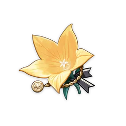
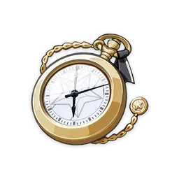
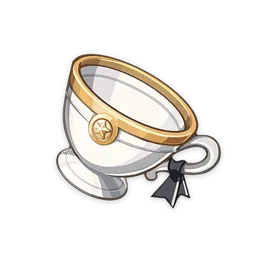

黃金劇團
2 元素戰技造成的傷害提升20%。
4 元素戰技造成的傷害提升25%；此外，處於隊伍後臺時，元素戰技造成的傷害還將進一步提升25%，該效果將在登場後2秒移除。
逐影獵人
2 普通攻擊與重擊造成的傷害提高15%。
4 目前生命值提升或降低時，暴擊率提升12%，該效果持續5秒，至多疊加3次。
4 目前生命值提升或降低時，暴擊率提升12%，該效果持續5秒，至多疊加3次。
花海甘露之光
2 生命值提升20%。
4 元素戰技與元素爆發造成的傷害提升10%；裝備者受到傷害後的5秒內，上述傷害提升效果提高80%，該提高效果至多疊加5層，每層持續時間獨立計算，處於隊伍後臺時依然能觸發該效果。
水仙之夢
2 獲得15%水元素傷害加成。
4
普通攻擊、重擊、下落攻擊、元素戰技或元素爆發命中敵人後，將產生1層持續8秒的「鏡中水仙」效果。處於1/2/3層及以上「鏡中水仙」效果下時，攻擊力將提高7%/16%/25%，水元素傷害加成提升4%/9%/15%。由普通攻擊、重擊、下落攻擊、元素戰技或元素爆發產生的「鏡中水仙」將分別獨立存在。
沙上樓閣史話
2 獲得15%風元素傷害加成。
4 重擊命中敵人後，該角色的普通攻擊速度提升10%，普通攻擊、重擊與下落攻擊造成的傷害提升40%，持續15秒。
樂園遺落之花
2 元素精通提高80點。
4
裝備者綻放、超綻放、烈綻放反應造成的傷害提升40%。此外，裝備者觸發綻放、超綻放、烈綻放後，上述效果帶來的加成提升25%，該效果持續10秒，至多疊加4次，每1秒至多觸發一次。裝備者處於隊伍後臺時依然能觸發該效果。
飾金之夢
2 元素精通提高80點。
4
觸發元素反應後的8秒內，會根據隊伍內其他角色的元素類型，使裝備者獲得強化：隊伍中每包含1個和裝備者同類元素的角色，攻擊力提升14%：每包含1個和裝備者不同元素類型的角色，元素精通提升50點。上述每類效果至多計算3個角色。該效果每8秒至多觸發一次。裝備者處於隊伍後臺時，依然能觸發該效果。
深林的記憶
2 深林的記憶
4 元素戰技或元素爆發命中敵人後，使命中目標的草元素抗性降低30%，持續8秒。裝備者處於隊伍後臺時，依然能觸發該效果。
辰砂往生錄
2 攻擊力提高18%。
4
施放元素爆發後，將產生持續16秒的「潛光」效果：攻擊力提升8%；並在角色的生命值降低時，攻擊力進一步提升10%，至多依此方式提升4次，每0.8秒至多觸發一次。「潛光」效果將在角色退場時消失；持續期間再次施放元素爆發，將移除原有的「潛光」。
來歆餘響
2 攻擊力提高18%。
4
普通攻擊命中敵人時，有36%機率觸發「幽谷祝祀」：普通攻擊造成的傷害提高，傷害提高值為攻擊力的70%，該效果將在普通攻擊造成傷害後的0.05秒後清除。普通攻擊未觸發「幽谷祝祀」時，會使下次觸發機率提升20%；0.2秒內至多判定1次觸發與否。
華館夢醒形骸記
2 防禦力提高30%。
4
裝備此聖遺物套裝的角色在以下情況下，將獲得「問答」效果：在場上用岩元素攻擊命中敵人後獲得一層，每0.3秒至多觸發一次；在隊伍後台中，每3秒獲得一層。問答至多疊加4層，每層能提供6%防禦力與6%岩元素傷害加成。每6秒，若未獲得問答效果，將損失一層。
海染硨磲
2 治療加成提高15%。
4
裝備此聖遺物套裝的角色對隊伍中的角色進行治療時，將產生持續3秒的海染泡沫，記錄治療的生命值回復量（包括溢出值）。持續時間結束時，海染泡沫將會爆炸，對周圍的敵人造成90%累計回復量的傷害（該傷害結算方式同感電、超導等元素反應，但不受元素精通、等級或反應傷害加成效果影響）。每3.5秒至多產生一個海染泡沫；海染泡沫至多記錄30000點回復量，含溢出部分的治療量；自己的隊伍中同時至多存在一個海染泡沫。裝備此聖遺物套裝的角色處於隊伍後台時，依然能觸發該效果。
追憶之注連
2 攻擊力提高18%。
4 施放元素戰技時，如果角色的元素能量高於或等於15點，則會流失15點元素能量，使接下來的10秒內，普通攻擊、重擊、下落攻擊造成的傷害提高50%，持續期間內該效果不會再次觸發。
絕緣之旗印
2 元素充能效率提高20%。
4 基於元素充能效率的25%，提高元素爆發造成的傷害。至多依此方式獲得75%提升。
千岩牢固
2 生命值提升20%
4 元素戰技命中敵人後，使隊伍中附近的所有角色攻擊力提升20%，護盾強效提升30%，持續3秒。該效果每0.5秒至多觸發一次。裝備此聖遺物套裝的角色處於隊伍後台時，依然能觸發該效果。
蒼白之火
2 造成的物理傷害提高25%。
4 元素戰技命中敵人後，攻擊力提升9%。該效果持續7秒，至多疊加兩層，每0.3秒至多觸發一次。疊滿兩層時，2件套裝的效果提升100%。
冰風迷途的勇士
2 冰風迷途的勇士
4 攻擊處於冰元素影響下的敵人時，暴擊率提高20%；若敵人處於凍結狀態下，則暴擊率額外提高20%。
沉淪之心
2 獲得15%水元素傷害加成。
4 施放元素戰技後的15秒內，普通攻擊與重擊造成的傷害提高30%。
染血的騎士道
2 造成的物理傷害提高25%。
4 擊敗敵人後的10秒內，施放重擊時不消耗體力，且重擊造成的傷害提升50%。
昔日宗室之儀
2 元素爆發造成的傷害提升20%。
4 施放元素爆發後，隊伍中所有角色攻擊力提升20%，持續12秒。該效果不可疊加。
熾烈的炎之魔女
2 獲得15%火元素傷害加成。
4 超載、燃燒、烈綻放反應造成的傷害提升40%，蒸發、融化反應的加成係數提高15%。施放元素戰技後的10秒內，2件套的效果提高50%，該效果最多疊加3次。
悠古的磐岩
2 獲得15%岩元素傷害加成。
4 獲得結晶反應形成的晶片時，隊伍中所有角色獲得35%對應元素傷害加成，持續10秒。同時只能通過該效果獲得一種元素傷害加成。
逆飛的流星
2 護盾強效提高35%。
4 處於護盾庇護下時，額外獲得40%普通攻擊和重擊傷害加成。
翠綠之影
2 獲得15%風元素傷害加成。
4 擴散反應造成的傷害提升60%。根據擴散的元素類型，降低受到影響的敵人40%的對應元素抗性，持續10秒。
被憐愛的少女
2 角色造成的治療效果提升15%。
4 施放元素戰技或元素爆發後的10秒內，隊伍中所有角色受治療效果加成提高20%。
如雷的盛怒
2 獲得15%雷元素傷害加成。
4 超載、感電、超導、超綻放反應造成的傷害提升40%，超激化反應帶來的傷害提升提高20%。觸發上述元素反應或原激化反應時，元素戰技冷卻時間減少1秒。該效果每0.8秒最多觸發一次。
教官



2 元素精通提高80點。
4 觸發元素反應後，隊伍中所有角色的元素精通提高120點，持續8秒。